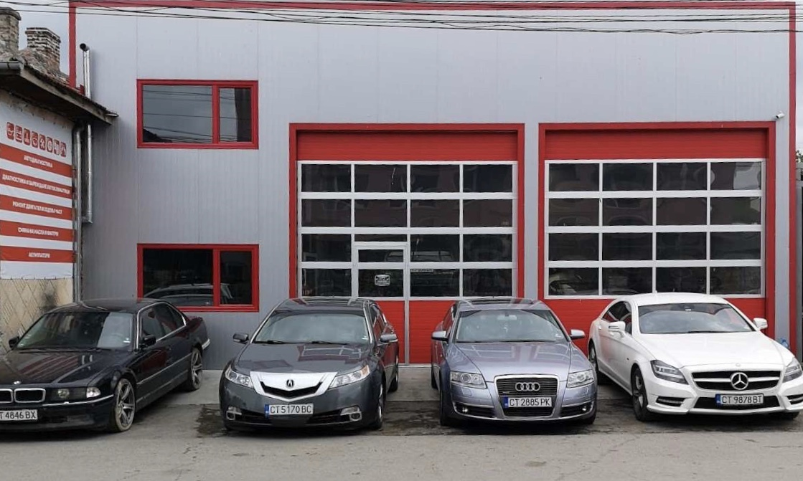

Контакти:
- с. Горно Сахране ул. "Васил Левски" 37
- 0896 73 49 55 | 0896 73 49 59
- ivanzahariev1@gmail.com
- Можете да ни пишете и от ТУК
Работно време:
- Пн--Пт: 09:00-13:00
- 14:00-18:00
- Събота: Почивен
- Неделя: Почивен
Как да стигнете до сервиза ?

Най-лесния начин да стигнете до сервиза с автомобил е да влезете в селото от юг и да карате по главния и добре асвалтиран път. Минавате центъра и кметството, след още 30-40 метра минавате и църквата (пада ви се в дясно), и след още толкова ще видите сервиза в ляво от вас.